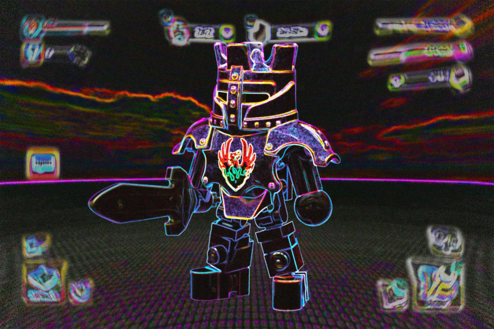
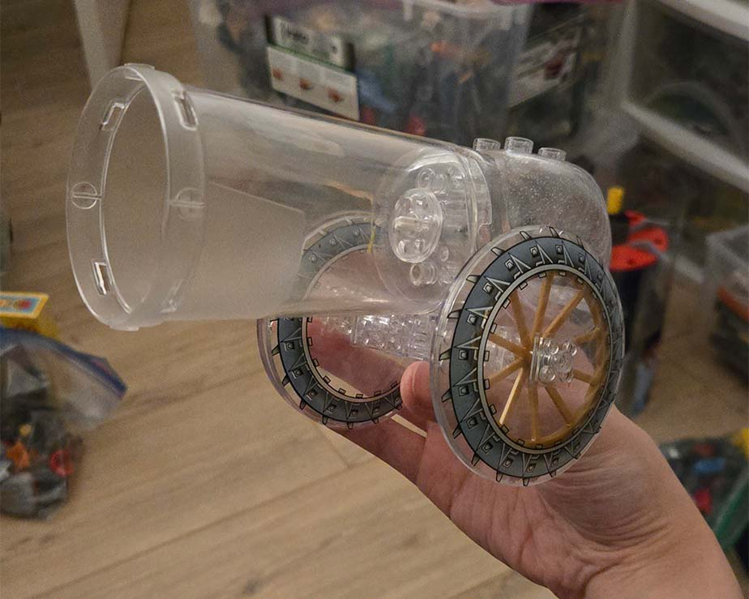
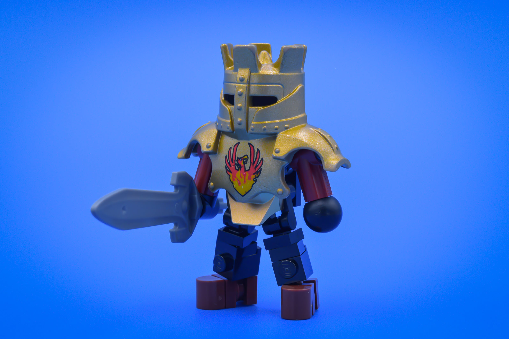
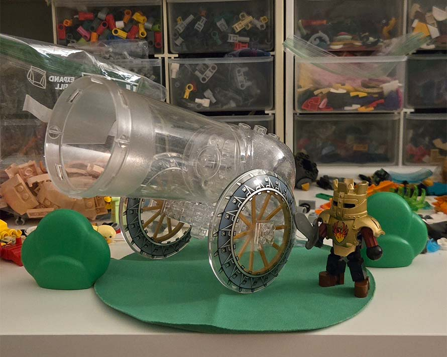
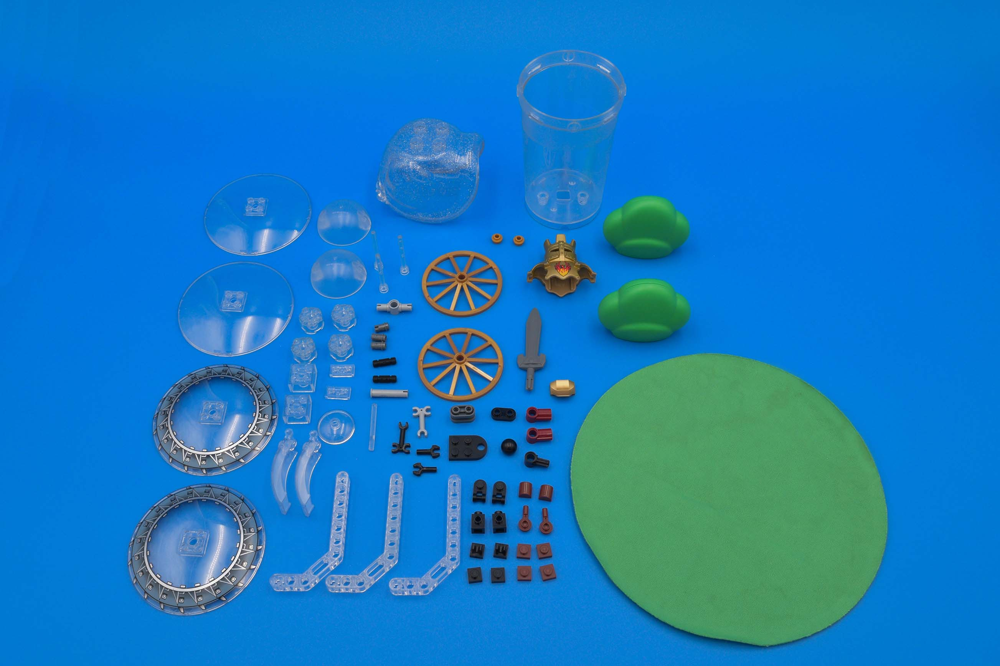
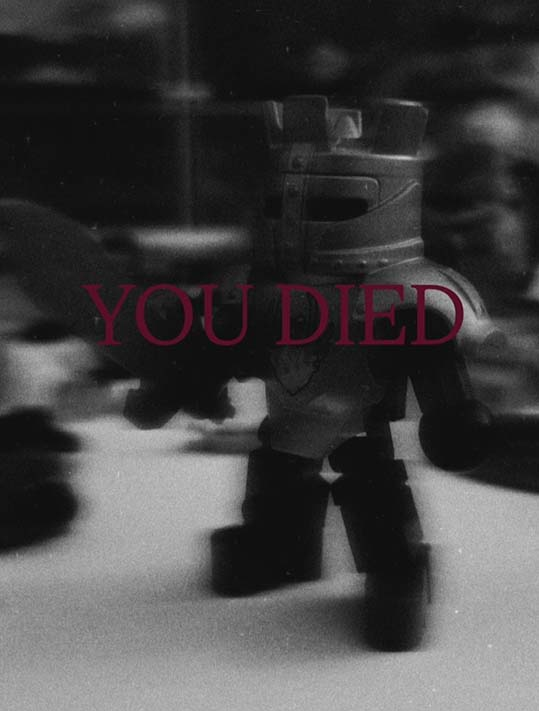

glass cannon

It's March, which means it's time for marchitecture Rogue Olympics! Just like last year, I have once again signed myself up for an eight week building marathon, where each build must be no more than 101 pieces. Whether I'll build for all eight weeks is up in the air, but I've recently felt a surge of creative energy (probably because there's actual sunlight in Denmark now).
gaming brainrot

The theme for this first round was "fragile". The many bus rides to and from work have given me lots of time to sink into games, and I associated "fragile" with a glass cannon unit. For the non-gamers out there, a glass cannon is a character that has high offense capabilities at the cost of low defense - high risk, high reward.
2am building session
So after a night of hanging out with friends, I got home and was getting ready for bed, but I just had to enter the lego room. The glass cannon idea was materializing in my brain, so I told myself I'd take a quick peek to see if it was even possible with what parts I have on me. I dug up a Duplo Little Robots can (which I had taken the screws off to remove the lid) and paired it with a Duplo Little Forest Friends snail shell to form the cannon. At this point, I really should have went to bed, but ended up building pretty much 95% of the cannon.

a productive late-night/early-morning building session
duplo john darksoul and stylization

The cannon only ate up 36 pieces, so I still had plenty of parts to play around with. The subject matter of a literal glass cannon along with the cartoonish look - mostly due to the use of those big duplo elements - led me to wanting to make a character that further emphasized the cartoony/mobile game look. The knight (john darksoul) uses a duplo armor piece, but the rest of the body is entirely brick built rather than using a duplo figure. By building it out of system, I had more control in the shape language of the body, and emphasized the cartoon/mobile game style by rounding off the hands and feet. Furthermore, the limbs are geometrically simple (low poly), which I believe to also help. Lastly, the sword is from a Knight's Kingdom Nestlé toy.
i am still underbudget

The knight was only 31 pieces, so I still had some parts allocation leftover. I wanted to do a very simple composition that built upon the shape language I had established with the previous builds. I stuck to round shapes for the ground and scenery, with the ground being a duplo doll rug, and the bushes also being duplo parts. At this point, I didn't want to add anymore to the model, as I felt anything else would complicate things. So, if you've been keeping track, the grand total of parts for this moc is 70 pieces. Quite a bit different from last year, where I was hitting the limit pretty much every build!

the end (is just the beginning)
Just like how last year's Rogue Olympics entries devolved into using funny, absurd pieces, I hope to continue the trend this year...
